I want to stream Movies and TV
-
Plex
You can stream directly from Willflix using Plex via the plex.tv web player or Plex apps you install on your phone, computer, or TV streaming device. This section walks you through setting up Plex on Willflix and getting started with the web player. If you're going to regularly watch on your computer, however, I recommend installing the Plex app for Windows or Mac.
-
Creating Your Account (the first time)
If you're reading this then I've likely sent you an email invite to Plex on Willflix. If not, ask me for it!
Go to plex.tv and sign up for an account.
Once you log in, click on the icon in top-right and then go to Users and Sharing. In the Friends section, click the checkmark next to "Willflix Wants to share with you".
If you don't see an invitation here I have sent it to a different email address. Let me know and I'll fix it!
-
Configure the player
Note: This section walks you through setting up the plex.tv web player. This isn't the best way to watch, but is the easiest to demonstrate. The configuration process for other Plex apps will be similar.
Click Home in the top-left, find Willflix under the "More" menu:
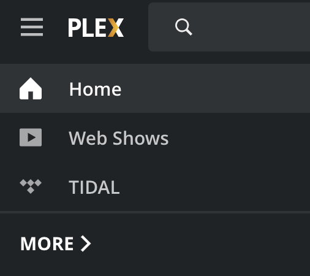
then use the 3 dots next to each Willflix library you want to pin it to your "home"
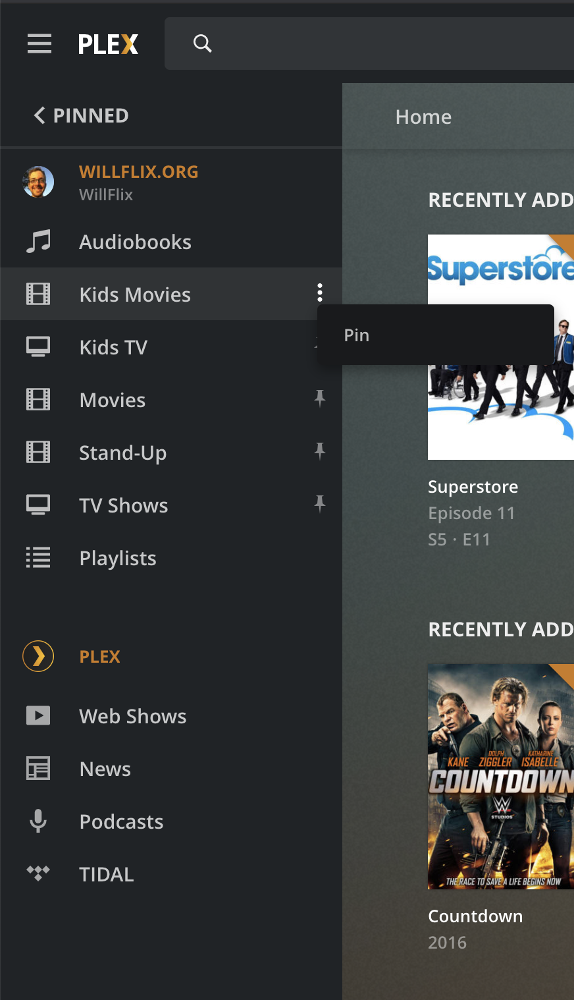
(and un-pin the default Plex libraries if you desire).
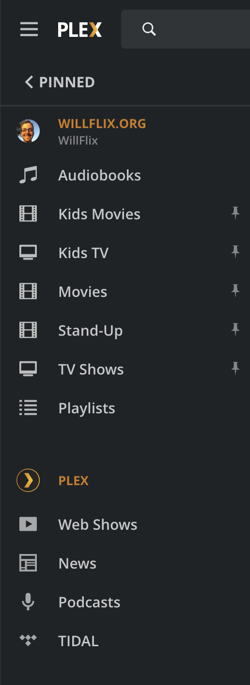
Now when you click Home or log in, you'll have access to all of Willflix.
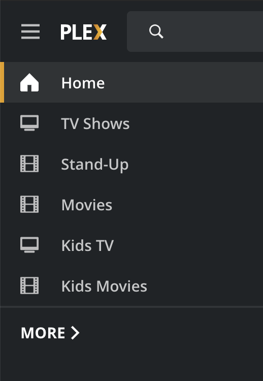
-
Download other Plex apps
Plex has apps for iOS, Android, Mac, Windows, Apple TV, Roku, Amazon Fire, Mac, and just about everything else. Go to their Downloads page and get the app on your phone, laptop, and TV.
Sign into your account on each device and you'll already have access to Willflix.
On each device, however, you should change the Quality settings as above (set to Maximum, automatic), and set up the home screen as you wish. See these articles on Customizing your Mobile Apps or Customizing your Big Screen (TV) Apps for more details.
-
Usage tips
Change Subtitles and Language by clicking on the Settings icon which will then let you choose subtitles and audio stream.
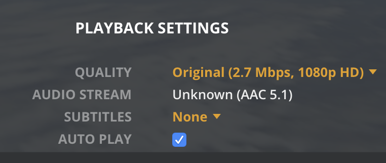
I want to download Media
-
Plex
In most cases, streaming is the best choice for Movies and TV.
But if you want to take shows with you on a flight, downloading can be the best option. In this case, I highly recommend using the VLC Media Player as it has by far the best compatibility support.
-
Browsing
Use the
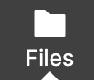
Files tab of the navigation bar to browse files. . When you've found what you want, right-click and choose Download.
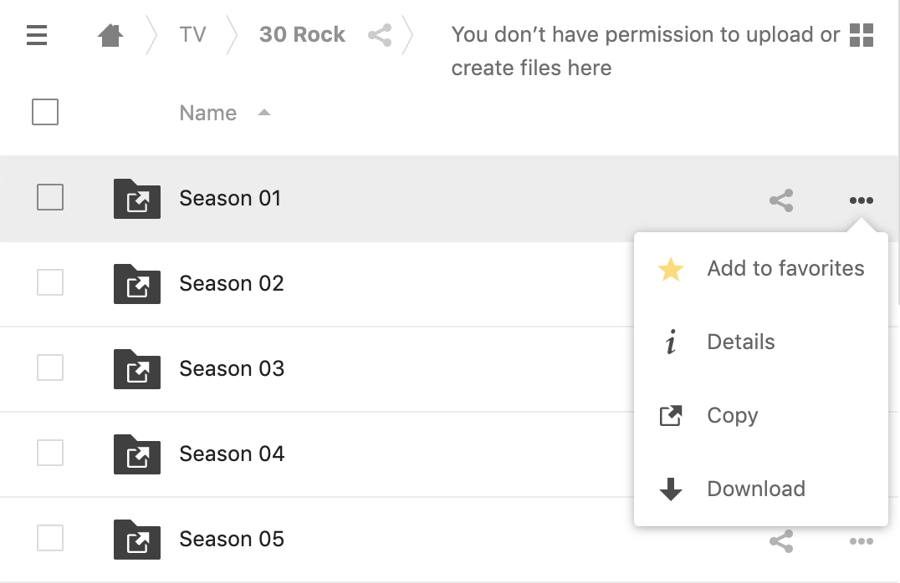
.You can download individual files or whole directories, zipped together. If you want media in bulk let me know and I can make better arrangements.
I want to request Media
I'm happy to try to accomodate any requests you might have. Not everything is easily available, but let me know what you'd like and I'll do my best to find it
I want to read books on my Kindle
-
Reading Ebooks
The Books tab of the navigation bar lets you browse ebooks, download them, and send them directly to your Kindle if you've configured things correctly.
-
Signing in
At this time the Books section of Willflix.org requires a separate account from the main site. If you want access to ebooks, you'll need to contact me and ask me to create an account for you. I hope to automate this process soon!
-
Browsing books
Searching for books bu title and author is should be straight-forward.
In addition, note that book can be organized into Series – useful if you want to read books in order.
You can also create your own Shelves to keep track of books you want to read (or anythings else).
-
Downloading
When you've found a book you'd like to download, click the download button in the top-right and select the ebook format you'd like.
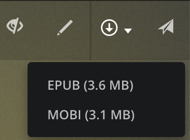
In almost all cases you want to download EPUB format which works with Kindles and iBooks.
-
Sending directly to your kindle
(Once)Configure your Amazon account to receive books from Willflix Books:
- Visit Manage Your Content and Devices page.
- Sign-in to Amazon account.
- Click on "Preferences".
- Click on "Personal Document Settings".
- Under "Send-to-Kindle E-Mail Settings", write down the email address associated with the Kindle you'd like to read on (you can change this email address if you want). NOTE: If your kindle email address doesn't have capital, lowercase, and numbers in it, or if it contains the username part of your email address, Amazon will require you to click a link in your personal email in order to allow the book to be sent to your kindle. This is a pain so choose a kindle email address that meets these rules
- Enable "Personal Document Archiving"
- Under "Approved Personal Document E-mail List", add wemcdonald@gmail.com
(Once)Configure Willflix Books to send to your Kindle:
- Click on the
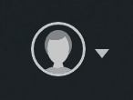
Account menu in the top-right - Click on your usename
- Enter your Kindle email address (that you wrote down above)
- Click submit
Now, whenever you find a book you like, just click the paper airplane in the top-right and click "Send To Kindle"
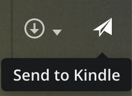
If your book doesn't show up in a few minutes, check your email – Amazon may ask you to click a link confirming that the book should be sent.
I want to listen to audiobooks
-
The AudioBooks tab of the navigation bar lets you browse audibooks, download them, and listen to them.
-
Plappa
For the best audiobook listening experience, I recommend using Plappa, which connects directly to Willflix's audiobook library. Download it from the App Store and follow the setup steps below.
-
Setting up Plappa
Setting up Plappa to connect to Willflix is straightforward:
- Click on "AudioBookShelf" in the app
- Enter audiobooks.willflix.org into the server field
- Click "Login with OpenID" and then sign into Willflix using the same credentials you used before
Here's what the authentication screen looks like:
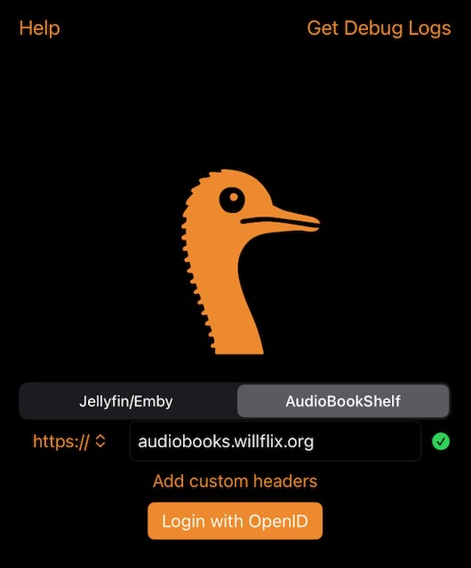
-
Using Plappa
Once connected, you'll have access to the entire Willflix audiobook collection. You can browse, download for offline listening, and stream directly from your phone. The app includes features like playback speed control, sleep timers, and progress syncing.